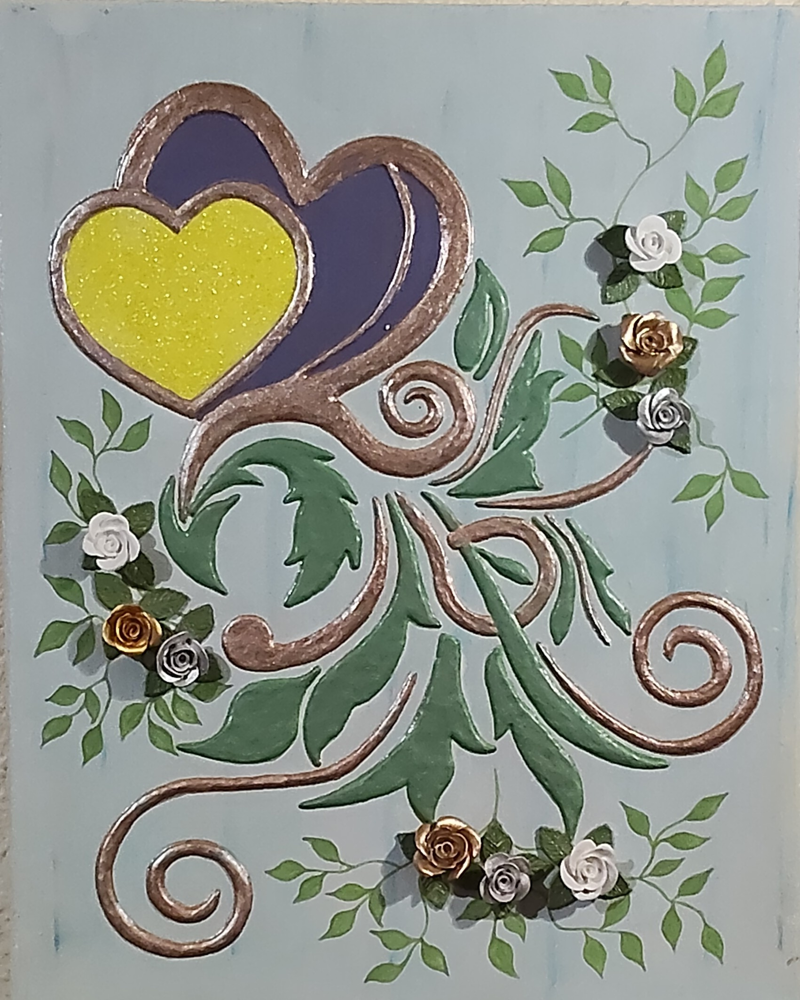

NICOLETA FILIP ART
LIENZO FLORAL 1
Composición ornamental de inspiración vegetal, formada por grandes hojas estilizadas, flores amarillas y elementos ramificados sobre un fondo decorativo.
Sobre la obra
LIENZO FLORAL 1 presenta una composición vegetal de carácter ornamental, estructurada mediante grandes formas curvas y hojas estilizadas que recorren la superficie del lienzo.
Las flores amarillas y los elementos vegetales se distribuyen de forma equilibrada alrededor de la composición, generando diferentes niveles de volumen y profundidad.
El conjunto combina elementos florales tridimensionales con decoración pintada, creando una composición de marcado carácter artesanal.
Presentación artística
Las flores adquieren protagonismo mediante un trabajo artesanal de alto relieve que genera volumen y presencia sobre la superficie del lienzo.
Las hojas, ramas y demás elementos vegetales completan la composición y establecen un recorrido visual dinámico, mientras la decoración pintada aporta profundidad y riqueza cromática.
Ficha técnica
- Año
- 2026
- Dimensiones
- 40 × 60 cm
- Soporte
- Lienzo
- Técnica
- Técnica mixta, con flores realizadas en alto relieve artesanal mediante escayola y yeso.
- Categoría
- Floral
Si deseas recibir información sobre esta obra, puedes solicitarla directamente.
SOLICITAR INFORMACIÓN →